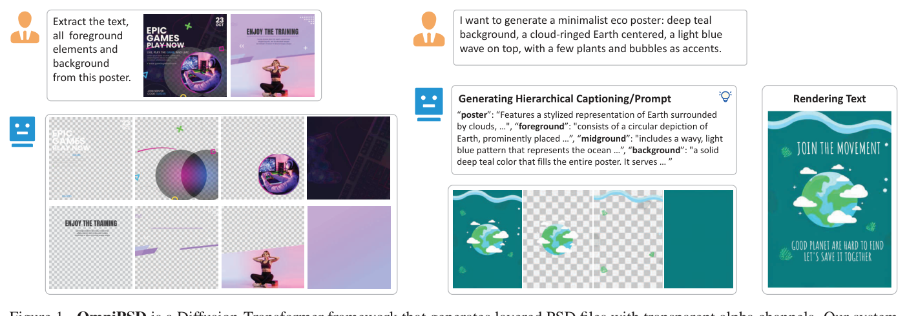
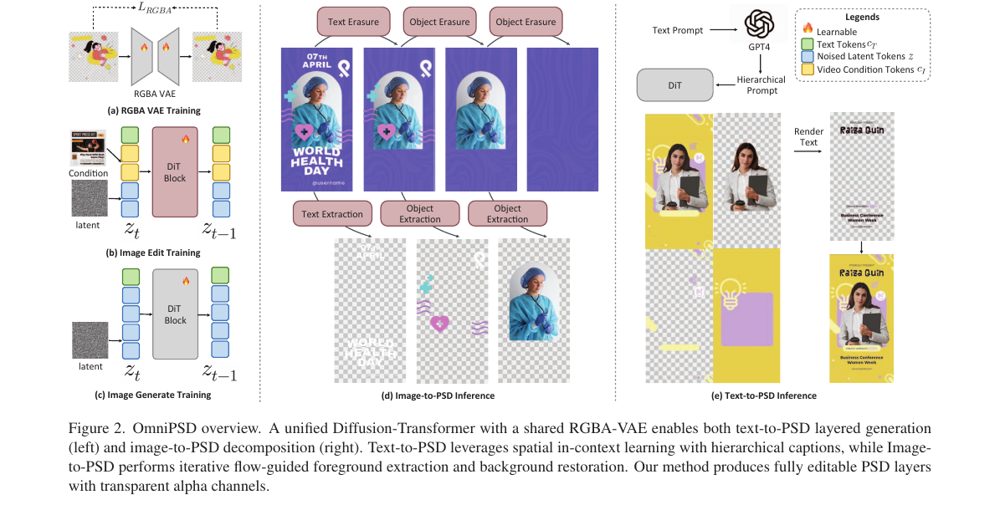
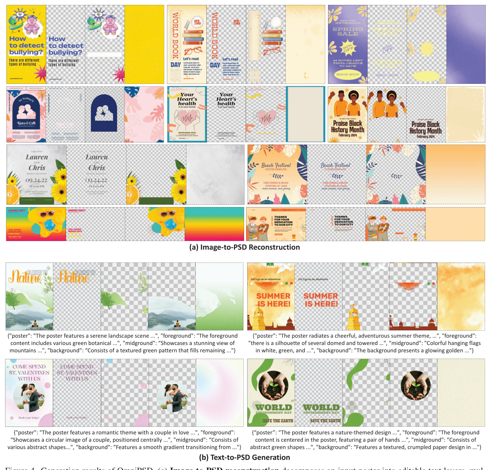
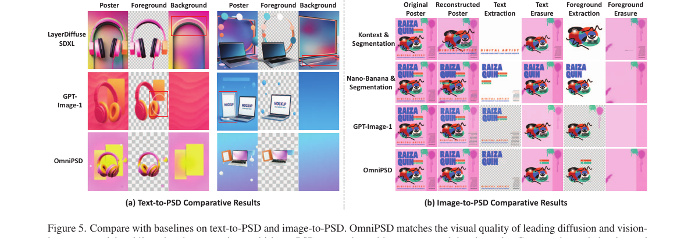
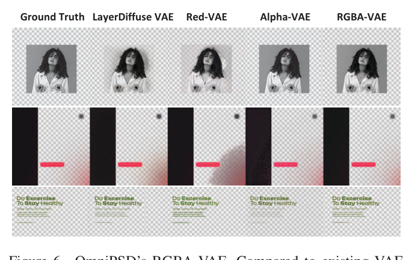
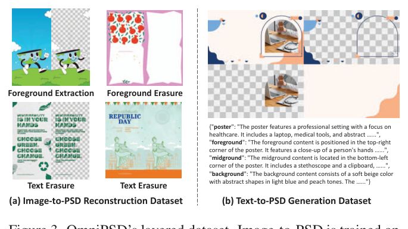

- 一句话：OmniPSD 用一套基于 Flux 生态的 Diffusion-Transformer 框架，同时支持「文字→分层 PSD 生成」和「图像→分层 PSD 拆解」，输出带透明 alpha 通道、可编辑的多图层文件。
- 解决的痛点：现在的生成模型只能吐出压平的单张 RGB 位图，没有图层结构、没有透明通道，没法直接拿进 Photoshop 这类专业设计流程里编辑。
- 关键做法：(1) 预训练一个 RGBA-VAE 把透明图编进 latent；(2) 文字→PSD 把多个目标图层排进一张 2×2 网格画布，靠 DiT 的空间注意力一次性学到图层关系（Flux-Dev）；(3) 图像→PSD 做迭代式 in-context 编辑——逐层「提取文字→擦除→还原背景→分割前景」（Flux-Kontext + LoRA）。
- 效果：图像→PSD 重建上，OmniPSD 把 FID 从 GPT-Image-1 的 53.21 降到 30.43、CLIP 从 35.59 升到 37.64；RGBA-VAE 重建 PSNR 达 32.5（Alpha-VAE 仅 26.9），并且是唯一能输出真正 RGBA 图层的方法。
- 能拿来干嘛：把 AI 海报生成接到真实设计工作流（拿到可改的图层）。已开源：官方代码 showlab/OmniPSD（含训练/推理脚本），数据集子集 lc03lc/OmniPSD_Layered_Poster 也已放出。

📄 原文 caption
Figure 1. OmniPSD is a Diffusion-Transformer framework that generates layered PSD files with transparent alpha channels. Our systemsupports both Text-to-PSD multi-layer synthesis and Image-to-PSD reconstruction, producing editable layers that preserve structure, trans-parency, and semantic consistency.
1. 问题与动机
Photoshop 的 PSD 这类分层设计格式是现代数字内容创作的基石：每个元素（标题文字、人物前景、装饰图形、背景）都是独立、可单独编辑、带透明信息的图层，设计师才能任意调整布局、替换元素、做合成推理。但今天绝大多数生成模型——无论 Stable Diffusion、SDXL 还是各种 DiT——只能输出一张压平的 RGB 位图：所有元素被烘焙在一起，既没有图层结构，也没有 alpha 透明通道。这张图很好看，却没法直接拿进专业设计流程去改。
普通文生图就像把一桌菜端上来已经搅成了一盘炒饭——好吃，但你想把里面的虾单独挑出来换成牛肉，已经不可能了。而设计师真正要的是一份食材分装好、还贴着标签的料理包：米饭一格、虾一格、配菜一格，每格都能单独拿出来替换、调味、重新摆盘。OmniPSD 要做的就是：要么直接生成这种「料理包」（文字→PSD），要么把别人端上来的炒饭逆向拆回料理包（图像→PSD）。难点在于「虾从炒饭里挑出来后，它原来盖住的那块米饭得给补上」——也就是拆图层时必须把被遮挡的背景还原干净。
现有方法的 gap（具体说）：(1) 大多数方法走「先生成压平图、再后处理拆层」的两阶段套路（用 matting/分割把前景抠出来），但这会误差累积、图层间不一致、边缘有 halo 光晕，且抠出来的前景背后是一个洞——遮挡处的背景信息已经丢了。(2) 直接生 RGBA 的方法（如 LayerDiffuse 系）多在自然图上预训练，一旦遇到设计场景的半透明文字、阴影叠加、柔和混合就严重退化。(3) 没有任何一个先前方法能从一张压平海报反推出可编辑的 PSD。OmniPSD 同时补上生成与拆解两侧，并都做到 alpha-aware。
2. 相关工作与发展脉络
这条线可以讲成一个故事：扩散模型先在压平 RGB 图上做到极致（SD/SDXL→DiT：SD3/FLUX/HunyuanDiT），同时 flow-matching 把扩散重述成连续确定性流，采样更高效。但「分层」需求一直没被满足：早期分层做法用 depth/alpha matte 在简化的前景-背景假设下拆图，够用于抠图分割，却给不出专业工具要的丰富可编辑结构。扩散时代出现两条路——一条仍是「先合成再后拆」（误差累积、层间弱一致）；另一条是直接生成分层内容：LayerDiff / LayerDiffuse / LayerFusion / ART / LayerTracer 联合建模背景+前景 RGBA+遮挡+可变层数，MuLan / PSDiffusion 进一步提升可控性与跨层一致性。平行地，图形设计方向（COLE / OpenCOLE / Graphist / Desigen / Poster-LLaVA）关注高层布局与模板合成。OmniPSD 站在这个交叉点上：既要真正的 RGBA 图层（不像设计方向只给压平渲染或粗向量），又要同时支持生成与逆向拆解（不像分层方向只做生成），并用 in-context 的方式把两者塞进同一个 DiT。
3. 方法总览（先建立直觉）
OmniPSD 其实是三个零件拼起来的。第一个零件是底座：RGBA-VAE。普通 VAE 只认识 RGB 三通道，它把第四个通道（alpha 透明度）也学进 latent，而且专门在设计素材上重训过，所以半透明文字、阴影、柔和混合都能编码-解码得很干净。它被生成和拆解两条路共享，保证两边活在同一个 latent 空间里。
第二个零件是文字→PSD（用 Flux-Dev）。核心小聪明是：不另外加什么跨层注意力模块，而是把要生成的几个图层（整图、前景、中景、背景）摆进一张 2×2 的大画布，当成一张图一次性生成。DiT 本来就有全局空间自注意力，于是网格里的各个格子天然「看得见彼此」，模型就隐式学会了图层之间的布局、遮挡、配色关系。再配合 LLM 产出的分层级 caption（每个图层一段描述）做语义引导。
第三个零件是图像→PSD（用 Flux-Kontext + LoRA）。把「拆图层」类比成设计师在 PS 里一层层往外抠的手工活，做成迭代式的 in-context 图像编辑：每一轮先提取当前最外层（文字或某个前景物体）成一个 RGBA 层，再擦除它并把它盖住的背景补全，露出更深的内容，如此往复，最后得到干净背景。这个「提取→擦除→还原」被形式化成条件 flow-matching。
别造新模块——把「分层」这件事翻译成 DiT 本来就擅长的两种能力：生成时用空间布局（2×2 网格让图层互相可见），拆解时用in-context 编辑（一层层提取并修补背景）；再用一个共享的 RGBA-VAE 兜住透明通道，整套就能输出可编辑 PSD。
编码/解码 4 通道(含 alpha)"] end subgraph T2P[文字→PSD Flux-Dev] T["文本 prompt"] --> H["LLM 生成分层级 caption
poster/fg/mid/bg"] H --> G["排进 2×2 网格画布 G"] G --> DiT1["DiT 空间自注意力
一次前向生成全部图层"] end subgraph I2P[图像→PSD Flux-Kontext + LoRA] Img["压平海报 I0"] --> Ext["提取当前层
(文字/前景) → RGBA"] Ext --> Era["擦除 + 还原被遮挡背景"] Era -->|迭代 k 次| Ext Era --> BG["干净背景层"] end DiT1 --> RV Ext --> RV RV --> OUT["可编辑 PSD
(多个 RGBA 图层 + 元数据)"]
4. 符号表
下面方法部分会用到这些符号，看公式卡住时回来查。
| 符号 | 含义 | 维度 / 取值 |
|---|---|---|
| $I,\ \hat I$ | 真值图像 / RGBA-VAE 重建出的图像 | $H\times W\times 4$ |
| $z_{RGB},\ z_A$ | 颜色通道、alpha 通道对应的 latent 变量 | latent |
| $\phi(\cdot)$ | patch 级特征提取器（约束局部结构一致） | — |
| $\psi(\cdot)$ | 感知特征提取器（如 VGG，维持语义保真） | — |
| $p$ | latent 的高斯先验 | $\mathcal N(0,I)$ |
| $\lambda_{\text{pix}},\lambda_{\text{patch}},\lambda_{\text{perc}},\lambda_{\text{KL}}$ | 四项损失的权重 | 标量 |
| $\mathbf I_0$ | 输入的压平海报图 | $H\times W\times 4$ |
| $\mathbf y$ | 目标图层类型（前景 / 背景） | $\{\text{fg},\text{bg}\}$ |
| $E_\alpha$ | RGBA-VAE 编码器 | — |
| $\mathbf z_0,\ \mathbf z_1$ | flow 的起点（=输入 latent）与终点（=目标层 latent） | latent |
| $\mathbf z_t$ | $t$ 时刻的中间 latent，$\mathbf z_t=(1-t)\mathbf z_0+t\,\mathbf z_1$ | latent |
| $\mathbf v_\theta(\mathbf z_t,t\mid\mathbf z_0)$ | 模型预测的流速场（带参数 $\theta$） | 与 latent 同形 |
| $t$ | 流的连续时间 | $t\in[0,1]$ |
| $\mathbf m$ | 前景的二值 / bbox mask（提取模型的条件） | $H\times W$ |
| $\mathbf I_{\text{fg}}$ | 某个前景实例对应的 RGBA 目标层 | $H\times W\times 4$ |
| $\mathbf z_{\text{cond}},\ \mathbf z_{\text{target}}$ | 条件图、目标图各自的 latent | latent |
| $\mathbf Z,\ \mathbf Z'$ | 拼接后的 token 序列 / 注意力输出 | token 序列 |
| $Q,K,V$ | 注意力的 query/key/value，$d$ 为维度 | — |
| $\mathbf I_{\text{fg}}^{(k)},\ \mathbf I_{\text{bg}}^{(k)}$ | 第 $k$ 轮提取的前景层 / 还原出的背景 | RGBA |
| $\mathbf G$ | 2×2 网格画布（整图/前景/中景/背景四格） | $2\times2$ 块 |
| $\mathbf I_{\text{full}},\mathbf I_{\text{fg}},\mathbf I_{\text{mid}},\mathbf I_{\text{bg}}$ | 整图、前景、中景、背景四个图层 | 各为一格 |
5. 方法详解

📄 原文 caption
Figure 2. OmniPSD overview. A unified Diffusion-Transformer with a shared RGBA-VAE enables both text-to-PSD layered generation(left) and image-to-PSD decomposition (right). Text-to-PSD leverages spatial in-context learning with hierarchical captions, while Image-to-PSD performs iterative flow-guided foreground extraction and background restoration. Our method produces fully editable PSD layerswith transparent alpha channels.
5.1 RGBA-VAE：把透明通道学进 latent
所有图层最终都要进 latent 再扩散。普通 VAE 不认 alpha 通道，而现成的 AlphaVAE 又是在自然透明图上预训练的，碰到设计里的半透明文字、阴影叠加、柔和混合就糊。所以作者在真实设计素材上把它重训一遍，让它能把「颜色 + 透明度」一起干净地编码-解码。这个 VAE 是生成和拆解共享的「公共货币」。
- 是什么
- RGBA-VAE 的训练目标，四项加权：像素重建 + patch 局部一致 + 感知保真 + 两路 latent（颜色 / alpha）各自的 KL 正则。
- 逐符号
- $I,\hat I$ = 真值与重建图（含 alpha）；$\lVert\cdot\rVert_1$ 像素级 L1，保证逐像素准确；$\phi(\cdot)$ = patch 级特征，约束局部结构（边缘/纹理）不走样；$\psi(\cdot)$ = 感知特征（如 VGG），维持高层语义；$\mathrm{KL}(q\Vert p)$ 把后验拉向高斯先验 $p$，让 latent 规整可采样；关键在 alpha 单独有一路 $z_A$ 的 KL，透明通道被显式建模。
- 为什么这样设计
- 纯像素 L1 会糊、丢边缘；加 patch + 感知项把「局部结构」和「语义」一起拉住，这对设计图里的细文字、硬边缘、半透明渐变尤其重要。颜色与 alpha 分两路 KL，避免透明度被颜色主导而退化。
- 直觉
- 一句话：让 VAE 既能逐像素抠准、又看起来对、还把透明度单独伺候好，这样后面无论生成还是拆解都不会在 alpha 上翻车。
5.2 Image-to-PSD：迭代式 in-context 拆解（Flux-Kontext + LoRA）
不要妄想一步把所有层都预测出来。模仿设计师手工拆 PSD：每轮只对付最外面一层——先把它提取成一个 RGBA 层，再把它从画面里擦掉并把它原来盖住的背景补全，露出更深的内容，重复直到剩下干净背景。文字层、前景物体层分别由不同的 LoRA 专家负责。整个「提取→擦除」被写成一个条件 flow-matching：给定输入这张图作为条件，学一条把噪声 latent 推向「目标层 latent」的确定性流。
- 是什么
- 把「从输入图 latent $\mathbf z_0$ 变到目标层 latent $\mathbf z_1$」建成一条 ODE 流：$t$ 从 0 走到 1，中间状态 $\mathbf z_t$ 是两端的线性插值，速度由网络 $\mathbf v_\theta$ 给出。
- 逐符号
- $\mathbf z_0=E_\alpha(\mathbf I_0)$ = 压平输入图经 RGBA-VAE 编码；$\mathbf z_1=E_\alpha(\mathbf I_{\mathbf y})$ = 目标图层（前景或背景，由 $\mathbf y$ 指定）的 latent；$\mathbf z_t$ = 直线插值的中间 latent；$\mathbf v_\theta$ = DiT 预测的流速场，以 $\mathbf z_0$ 为条件（这就是 in-context：输入图全程在场）。
- 为什么这样设计
- flow-matching 是一条确定性路径，不像扩散那样注入随机噪声，因此收敛快、推理可复现，正好契合「精确还原图层」这种要求像素级保真的任务。
- 直觉
- 给模型看着原图，让它学「怎么把这张图平滑地变形成它的某一个图层」。
- 是什么
- 标准 Flow-Matching 损失：让预测的速度场对齐真实位移 $\mathbf z_1-\mathbf z_0$。
- 逐符号
- $t\sim\mathcal U(0,1)$ 时间均匀采样；$(\mathbf z_1-\mathbf z_0)$ = 直线流的真实速度（常量方向）；$\lVert\cdot\rVert_2^2$ 让网络输出逼近它。
- 为什么这样设计
- 因为路径是直线，真值速度就是固定的差向量，监督信号简单稳定；避免了扩散的随机噪声注入，收敛更快、推理确定。
- 直觉
- 训练就是教网络在任意时刻都「指对方向」——朝着目标图层走。
前景提取模型（Foreground Extraction）。给定 $\mathbf I_0$，模型先定位显著区域、再为每个前景实例生成 RGBA 层。每个 LoRA 适配器在三元组 $(\mathbf I_0,\mathbf m,\mathbf I_{\text{fg}})$ 上训练（$\mathbf m$ 是二值/bbox mask，$\mathbf I_{\text{fg}}$ 是该前景的 RGBA 目标）。条件图与目标图各自编码后拼成一条统一的 token 序列：
- 是什么
- 把「条件（原图）」和「目标（要提取的前景）」编码后首尾拼接成一个序列 $\mathbf Z$，交给 DiT 一起处理。
- 逐符号
- $\mathbf z_{\text{cond}}$ = 原图 latent；$\mathbf z_{\text{target}}$ = 目标前景 latent；$[\cdot;\cdot]$ = 沿 token 维拼接。
- 为什么这样设计
- 拼成一条序列后，注意力能同时看到原图和目标，前景该长什么样、边界在哪，都能从原图对应区域「抄」过来——这正是 in-context 编辑的精髓。
- 直觉
- 把「参考图」和「答题区」放进同一张卷子，模型边看参考边作答。
- 是什么
- Multi-Modal Attention（MMA，FLUX 的注意力）在拼好的序列上做双向注意力，输出 $\mathbf Z'$。
- 逐符号
- $Q,K,V$ 由 $\mathbf Z$ 线性投影得到；$\sqrt d$ 缩放；双向意味着条件 token 与目标 token 互相可见。
- 为什么这样设计
- 双向上下文让模型在原图和目标之间建立像素级 + 语义级对应，从而精准地把前景实例从原图里「读」出来。
- 直觉
- 这一步就是「对照原图，把这块前景临摹成一个独立透明层」。
前景擦除模型（Foreground Erasure）。提取完一个前景后，擦除模型在相同条件 $\mathbf I_0$ 和 mask $\mathbf m$ 下重建无遮挡的背景。第 $k$ 轮移除当前前景、还原被它盖住的背景 $\mathbf I_{\text{bg}}^{(k)}$，并把移除的内容存为一个 RGBA 层，最终堆成 PSD Stack：
- 是什么
- $K$ 轮迭代后，收集到的 $K$ 个前景 RGBA 层加上最后的干净背景层，组装成可编辑的 PSD 图层栈。
- 逐符号
- $\mathbf I_{\text{fg}}^{(k)}$ = 第 $k$ 轮提取的前景层；$\mathbf I_{\text{bg}}$ = 全部擦完后的干净背景。
- 为什么这样设计
- 所有 LoRA 共享 Flux-Kontext 的同一个 latent 流空间，使「文字移除 / 物体提取 / 背景修补」三个子任务模块化可组合，逐轮叠加而不互相破坏。
- 直觉
- 「提取一层→擦掉→补背景」反复做，像剥洋葱一样把海报剥成一摞透明图层。
深入（可跳过）：可编辑文字层恢复（OCR→字体→渲染）
光把文字抠成一张位图还不够「可编辑」。OmniPSD 用一条 OCR → 字体恢复 → 重渲染 流水线把光栅文字变回真正的矢量文字层：先用基于 transformer 的 OCR（PaddleOCR，支持多语种与版面）从像素里识别文字内容；再用 语义字体 embedding 检索 + 轻量字体分类系统从字体库里匹配最可能的字体；最后把「文字内容 + 推断的字体属性」重新渲染成分辨率无关的矢量文字对象，从而保留原排版与版式，得到真正可改字的图层。
5.3 Text-to-PSD：2×2 网格的 in-context 图层推理（Flux-Dev）
要让生成出的各个图层「彼此看得见、布局协调、遮挡合理」，最省事的办法不是加跨层注意力模块，而是把四个图层摆进一张 2×2 大画布当成一整张图来生成。DiT 的全局自注意力天然让四格互相对照，模型就隐式学会了图层间关系。再喂 LLM 写好的分层级 caption做语义锚点。
- 是什么
- 把整图、前景、中景、背景四个图层拼成一个 2×2 网格 $\mathbf G$，作为 in-context 视觉画布一次性生成。
- 逐符号
- $\mathbf I_{\text{full}}$ = 完整海报（左上）；$\mathbf I_{\text{fg}}$ = 前景（右上）；$\mathbf I_{\text{mid}}$ = 中景（左下）；$\mathbf I_{\text{bg}}$ = 背景（右下）。整张 $\mathbf G$ 经 RGBA-VAE 编码后由 DiT 在一次前向里处理。
- 为什么这样设计
- 网格内的图层 token 通过空间自注意力互相 attend 到完整海报 token，于是跨层对应与构图关系被隐式学到，不需要任何额外的跨层注意力模块。训练时仍只用标准 flow-matching 目标，不加新损失，语义完全来自分层 prompt + 网格结构。
- 直觉
- 把「四个图层」摆成一张拼图让模型一起画，它自然就懂得让前景压在背景上、整图等于各层叠加。
深入（可跳过）：Hierarchical Text Prompts 与训练设置
分层级提示：每个样本标注一条 JSON，给整图与每个语义层各一段描述，例如 {"poster":"...","foreground":"...","midground":"...","background":"..."}；其中 poster 描述全局场景，其余字段描述对应图层。这给了结构化的语义锚点。
训练设置（实验细节）：文字→PSD 用 Flux 1.0-dev，分辨率 $1024\times1024$、2×2 网格布局，LoRA rank 128、batch 8、lr 0.001、30k 步微调。数据集构造时故意去掉所有文字层（文字最后再渲染，以保真字体与可编辑性），四格布局为：左上完整海报、右上前景层1、左下前景层2、右下背景层。
6. 走一遍例子
拿一张「世界读书日」海报，分别走两条路看清楚。
- 输入（图像→PSD）：一张压平的 JPG 海报 $\mathbf I_0$——顶上有手写体大字「WORLD BOOK DAY」，中间一摞书的插画，背景是米黄色纹理。
- 第 1 轮·提取文字：文字 LoRA 把 $\mathbf I_0$ 编成 $\mathbf z_0$，沿 flow 推向「只含文字」的目标 latent，解码出一张仅文字、其余透明的 RGBA 层 $\mathbf I_{\text{fg}}^{(1)}$；再走 OCR→字体匹配→重渲染，把它变成可改字的矢量文字层。
- 第 1 轮·擦除文字：擦除 LoRA 在同一 $\mathbf I_0$ 与文字 mask 下，重建出「文字被抹掉、底下纹理补全」的图 $\mathbf I_{\text{bg}}^{(1)}$，露出干净的书堆+背景。
- 第 2 轮·提取/擦除前景：对 $\mathbf I_{\text{bg}}^{(1)}$ 重复——提取「那摞书」为 $\mathbf I_{\text{fg}}^{(2)}$（带透明边缘），擦除后补全得到纯米黄背景 $\mathbf I_{\text{bg}}$。
- 输出：$\{\mathbf I_{\text{fg}}^{(1)}\text{(文字)},\ \mathbf I_{\text{fg}}^{(2)}\text{(书)},\ \mathbf I_{\text{bg}}\text{(背景)}\}$ 组装成 PSD。看——你现在可以单独把标题改成中文、把书换成咖啡杯，背景纹路完好无缺。
- 对照（文字→PSD）：若只给一句「极简生态海报，深青背景，云环绕的地球居中，顶部浅蓝波浪」——LLM 先写出 poster/fg/mid/bg 四段分层 caption，DiT 在 2×2 网格里一次生成四格（整图/前景地球/中景波浪/背景），最后渲染文字，同样得到一摞可编辑 RGBA 层。
7. 实验
设置：自建 Layered Poster Dataset（20 万+ 真实 PSD，专业设计师创作，含语义分组/字体层/形状组/特效叠加，自动抽取组级与层级元数据，过滤保留有效 RGBA 结构）。文字→PSD baseline 用 LayerDiffuse、GPT-Image-1；图像→PSD 因为此前没有同类方法，对比若干能产 RGBA 层的商用系统，以及一个非-RGBA 代理方案（前景生在白底 + 用 SAM2 分割得到透明 mask）。指标：FID（视觉真实度）、PSNR/SSIM/MSE（重建保真）、CLIP（图文语义对齐）、GPT-4-score（用 GPT-4 当评委打布局与设计一致性）。文字→PSD 训 30k 步、图像→PSD 各专家 LoRA 训 30k 步，分辨率 $1024^2$。
怎么读表 1（图像→PSD 重建）：盯最后一行 OmniPSD，五个指标全面领先——MSE/FID 越低越好、PSNR/SSIM/CLIP-I/GPT-4 越高越好。
| Method | MSE ↓ | PSNR ↑ | SSIM ↑ | CLIP-I ↑ | GPT-4-score ↑ |
|---|---|---|---|---|---|
| Kontext | 1.10e-1 | 9.59 | 0.653 | 0.692 | 0.64 |
| Nano-Banana | 2.06e-2 | 16.9 | 0.816 | 0.916 | 0.86 |
| GPT-Image-1 | 2.48e-2 | 16.1 | 0.761 | 0.837 | 0.84 |
| OmniPSD (ours) | 1.14e-3 | 24.0 | 0.952 | 0.959 | 0.92 |
怎么读表 2（文字→PSD 生成）：FID 越低、CLIP/GPT-4 越高越好。OmniPSD 把 FID 几乎砍掉一半。
| Method | FID ↓ | CLIP Score ↑ | GPT-4 Score ↑ |
|---|---|---|---|
| LayerDiffuse SDXL | 89.35 | 24.78 | 0.66 |
| GPT-Image-1 | 53.21 | 35.59 | 0.84 |
| OmniPSD (ours) | 30.43 | 37.64 | 0.90 |
深入（可跳过）：子任务分解（表3）、RGBA-VAE 消融（表4）、prompt 消融（表5）
表 3（图像→PSD 各组件）：四个子任务的指标——文字提取 FID 11.42/PSNR 26.86/GPT-4 0.86；文字擦除 FID 19.38/PSNR 26.37/GPT-4 0.94；前景提取 FID 33.35/PSNR 19.27/GPT-4 0.84；前景擦除 FID 27.14/PSNR 29.41/GPT-4 0.92；整条 Full Image-to-PSD FID 24.71/MSE 1.14e-3/PSNR 23.98/GPT-4 0.90。可见文字相关子任务最稳，前景提取最难（FID 最高）。
| VAE | MSE ↓ | PSNR ↑ | SSIM ↑ | LPIPS ↓ |
|---|---|---|---|---|
| LayerDiffuse VAE | 2.54e-1 | 8.06 | 0.289 | 0.473 |
| Red-VAE | 2.52e-1 | 8.53 | 0.300 | 0.451 |
| Alpha-VAE | 4.15e-3 | 26.9 | 0.739 | 0.120 |
| RGBA-VAE (ours) | 9.82e-4 | 32.5 | 0.945 | 0.0348 |
表 4（RGBA-VAE 重建消融）：在设计素材上重训过的 RGBA-VAE 全面碾压——PSNR 32.5（次优 Alpha-VAE 26.9），LPIPS 0.0348（次优 0.120），证明「在设计数据上重训透明 VAE」是必要的（自然图预训的 LayerDiffuse VAE / Red-VAE 直接崩到 PSNR 8 级别）。
表 5（文字→PSD 的 prompt 消融）：去掉分层级 prompt（w/o layer-specific prompt）FID 38.56/CLIP 34.31/GPT-4 0.78，加回完整分层 prompt 后 FID 30.43/CLIP 37.64/GPT-4 0.90——naive prompt 会让生成质量明显下降，说明分层级 caption 是有效语义锚点。
8. 效果可视化

📄 原文 caption
Figure 4. Generation results of OmniPSD. (a) Image-to-PSD reconstruction decomposes an input poster into editable text layers, mul-tiple foreground layers, and a clean background layer. (b) Text-to-PSD synthesis uses hierarchical captions to generate background andforeground layers, followed by rendering the corresponding editable text layers.

📄 原文 caption
Figure 5. Compare with baselines on text-to-PSD and image-to-PSD. OmniPSD matches the visual quality of leading diffusion and vision-language models while uniquely supporting multi-layer PSD generation with transparent alpha channels. Compared to existing layeredsynthesis baselines, it achieves clearly superior visual fidelity and more coherent, logically structured layers.

📄 原文 caption
Figure 6. OmniPSD’s RGBA-VAE. Compared to existing VAEmethods which compatible with image alpha channels.

📄 原文 caption
Figure 3. OmniPSD’s layered dataset. Image-to-PSD is trained onpaired samples, while Text-to-PSD uses a 2 × 2 grid that presentsthe full poster and its decomposed layers for in-context learning.
9. 局限与讨论
- 适用边界：方法是为设计/海报类素材量身定的（明确的文字层、前景图形、平铺背景）；对自然照片这类没有清晰图层语义的图，「提取→擦除→还原」范式未必适用。前景提取也是整条流水线里最难、FID 最高的一环。
- 代价：依赖 Flux 大底座（Flux-Dev + Flux-Kontext）与多套任务专属 LoRA；图像→PSD 是迭代多轮推理，层数越多耗时越长；还挂着外部 LLM（GPT-4）写分层 caption 与 PaddleOCR 字体恢复，是一条多组件流水线。
- 误差可能逐层累积：迭代式拆解中，前一轮背景补全的瑕疵会带进下一轮（虽然作者论证比「先合成再后拆」更稳，但本质仍是序贯过程）。
- 开源但权重不完整：官方代码（showlab/OmniPSD）与训练/推理脚本已放出，HuggingFace 上也给了数据集子集（
lc03lc/OmniPSD_Layered_Poster）；但 README 未直接提供项目自训的 LoRA 权重下载（推理脚本里LORA_PATH需用户自填），完整的 20 万+ Layered Poster Dataset 也因来自在线设计仓库、存在版权/可分发性限制而未全量公开。 - 开放问题：层数与拆解顺序目前由流程固定（文字优先、再前景）；如何让模型自适应决定图层数与顺序、以及推广到非海报的通用分层内容，是后续方向。
10. 常见疑问
它和 LayerDiffuse 这类「直接生 RGBA 层」的方法到底差在哪？
两点。(1) 场景：LayerDiffuse 系主要在自然透明图上训练，碰到设计里的半透明文字/阴影/柔和混合会退化（见表 4，其 VAE PSNR 仅 8 级）；OmniPSD 在真实设计 PSD 上重训了 RGBA-VAE。(2) 能力范围：LayerDiffuse 只做生成，OmniPSD 还能从一张已经压平的海报反向拆出可编辑图层——这是先前没有方法能做的。
为什么文字→PSD 不直接加个跨层注意力模块，非要用 2×2 网格这种「取巧」做法？
因为 DiT 的全局空间自注意力本来就让画布内任意位置互相可见。把四个图层摆进一张网格，各格 token 自然能 attend 到完整海报 token，图层关系被免费学到——不用改架构、不加新模块、不加新损失，工程上更省、训练更稳。消融（表 5）也表明语义主要靠分层 prompt + 网格结构来给。
「擦除前景并补全背景」靠谱吗？补出来的会不会是乱编的？
这正是难点，也是 OmniPSD 相对「先合成再用 matting 后拆」的优势所在：后者抠完前景背后是个空洞，OmniPSD 的擦除 LoRA 是专门训练来重建无遮挡背景的（在三元组数据上学过「原图→去前景的干净背景」），并以原图作为 in-context 条件，因此补全更连贯。当然补出的是合理猜测而非真实被遮内容，遮挡很大时仍可能失真。
为什么用 flow-matching 而不是普通扩散去噪？
flow-matching 走的是确定性直线路径（$\mathbf z_t=(1-t)\mathbf z_0+t\mathbf z_1$），不注入随机噪声，监督信号是固定的速度差向量，收敛快、推理可复现。对「精确还原某个图层」这种要求像素级保真、希望结果稳定的任务很合适。
11. 复现指南
OmniPSD 已开源。官方仓库 showlab/OmniPSD（约 116 ⭐，Official implementation）提供 requirements.txt、训练脚本与推理脚本；HuggingFace 上放出了数据集子集 lc03lc/OmniPSD_Layered_Poster。需要注意：README 链接的是基座权重（FLUX.1-dev / FLUX.1-Kontext-dev / RGBA-VAE），推理脚本中的 LORA_PATH 指向项目自训 LoRA，需用户自行训练或填入。下方命令引自 README（本报告未实际运行）。
- 代码仓库：github.com/showlab/OmniPSD（官方，约 116 ⭐，Python ≈99.8%）
- 论文：arXiv:2512.09247（2025-12-10）；项目主页：showlab.github.io/OmniPSD；在线 Demo：Lovart AI
- 数据集：lc03lc/OmniPSD_Layered_Poster（Layered Poster Dataset 的子集；完整 20 万+ 集未全量公开）
- 权重 / Checkpoints：基座权重见 README ——FLUX.1-dev（文字→PSD）、FLUX.1-Kontext-dev（图像→PSD）、RGBA-VAE（FLUX.1-dev-alpha，脚本中替换路径）；项目自训 LoRA 未直接提供下载，
LORA_PATH需自填；OCR 用 PaddleOCR
Quick Start（命令引自官方 README）
# 0) 拉代码 + 装依赖
git clone https://github.com/showlab/OmniPSD
cd OmniPSD
pip install -r requirements.txt
# 下载基座权重：FLUX.1-dev、FLUX.1-Kontext-dev、RGBA-VAE(FLUX.1-dev-alpha)，并在脚本中替换为本地路径
# 1) 训练 —— 文字→PSD（基于 Flux-Dev）
bash scripts/train_psd_flux.sh
# 图像→PSD 的各任务专家（内容层前景/背景、文本层前景/背景等）有对应的 train 脚本
# 2) 推理 —— 文字→PSD
# 先编辑 inference/infer_psd_flux.py（设置 prompt、基座与 LORA_PATH 等），然后：
CUDA_VISIBLE_DEVICES=0 PYTHONPATH=$(pwd) python inference/infer_psd_flux.py论文训练分辨率 $1024\times1024$，文字→PSD 与各 LoRA 均 30k 步。需 Flux 量级底座（建议 24GB+ 显存做 LoRA 微调，推理同样吃显存）。注意：图像→PSD 是多轮迭代推理，层数多时延迟显著；分层 caption 与字体恢复依赖外部 GPT-4 / PaddleOCR，需各自配好。最大的复现障碍是完整 Layered Poster Dataset 未全量公开（仅放出子集）——这套带 RGBA 图层标注的真实 PSD 数据是效果的关键。此外 LORA_PATH 指向的项目自训权重需自行训练得到。
12. 术语表
- PSD
- Photoshop Document，分层设计文件格式，每个元素是独立、可编辑、带透明信息的图层。
- RGBA / alpha 通道
- 在 RGB 三色之外多一个 A（透明度）通道，记录每个像素的不透明程度，是图层合成的基础。
- RGBA-VAE
- 本文重训的、能编码/解码 4 通道（含 alpha）的变分自编码器，生成与拆解两路共享。
- DiT (Diffusion Transformer)
- 用 Transformer 做去噪主干的扩散模型，靠全局自注意力获得更好的保真与对齐（SD3/FLUX 等）。
- Flux-Dev / Flux-Kontext
- Flux 生态的两个模型：前者是文生图生成器，后者是 in-context 图像编辑模型；OmniPSD 分别用作两条路的底座。
- Flow-Matching
- 把扩散重述成一条确定性 ODE 流，学一个速度场把起点 latent 推向终点；无随机噪声，收敛快、推理可复现。
- In-context learning（视觉）
- 把参考/条件图与目标摆进同一序列或画布，让注意力直接「看着参考作答」，无需额外模块。
- LoRA
- 低秩适配器，少量参数微调大模型；本文为文字/前景的提取与擦除各训一套，共享同一 latent 流空间。
- Hierarchical caption
- 分层级文本标注，给整图与每个图层各写一段描述（poster/fg/mid/bg），作为生成的语义锚点。
- FID / CLIP score / GPT-4-score
- 分别衡量视觉真实度、图文语义对齐、以及用 GPT-4 当评委打的布局/设计一致性。
- Layered Poster Dataset
- 作者自建的 20 万+ 真实 PSD 数据集，含语义分组/字体层/特效叠加与结构化标注。